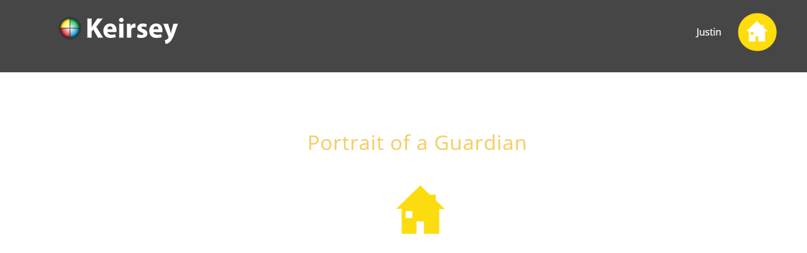

Personality
How My Strong Will Impacts My Academic Life
My strong will is a defining characteristic that significantly influences my academic pursuits. It serves as a driving force, propelling me towards my goals and helping me overcome challenges.
- Persistence and Determination: When faced with difficult assignments or setbacks, my strong will enables me to persevere and remain determined. I am not easily discouraged by obstacles, but rather view them as opportunities for growth and learning.
- Goal Orientation: My strong will allows me to set ambitious academic goals and remain focused on achieving them. I am driven by a desire to excel and am constantly striving for improvement.
- Self-Discipline: My strong will helps me maintain self-discipline and prioritize my academic responsibilities. I am able to manage my time effectively, resist distractions, and stay focused on my studies.
- Problem-Solving: When confronted with academic challenges, my strong will empowers me to think critically and seek solutions. I am not afraid to approach problems with a positive and proactive attitude.
- Resilience: My strong will helps me bounce back from academic setbacks and learn from my mistakes. I am able to view failures as opportunities for growth and development.
In conclusion, my strong will plays a crucial role in my academic success. It empowers me to overcome challenges, stay focused on my goals, and maintain a positive and proactive attitude towards my studies.
Hero or Mentor
My Hero/Mentor: Myself
I have come to realize that my greatest source of inspiration and mentorship lies within myself. I believe that personal growth and development are largely driven by self-belief, self-discipline, and a strong sense of purpose.
Reasons for Admiration:
- Resilience: I have faced numerous challenges and setbacks in my life, but I have always managed to bounce back and learn from my experiences. This resilience is a testament to my inner strength and determination.
- Curiosity: I have a natural curiosity that drives me to explore new ideas and learn new things. This curiosity has fueled my academic pursuits and helped me develop a lifelong love of learning.
- Self-Belief: I believe in my own abilities and potential. This self-belief has given me the confidence to pursue my goals and overcome obstacles.
- Determination: I am a highly determined individual who is not easily discouraged. When faced with challenges, I am able to stay focused and persevere until I achieve my desired outcome.
- Compassion: I strive to treat others with kindness and compassion. This empathy has helped me build strong relationships and contribute positively to my community.
By recognizing my own strengths and potential, I am able to set ambitious goals, overcome challenges, and achieve my aspirations. My self-belief and determination serve as a constant source of motivation and inspiration.
Personality Test
